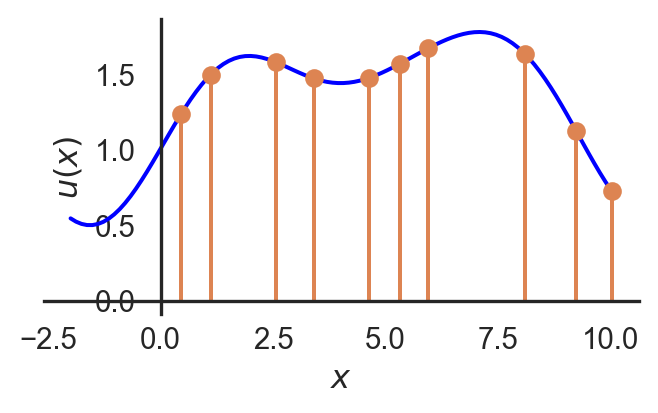
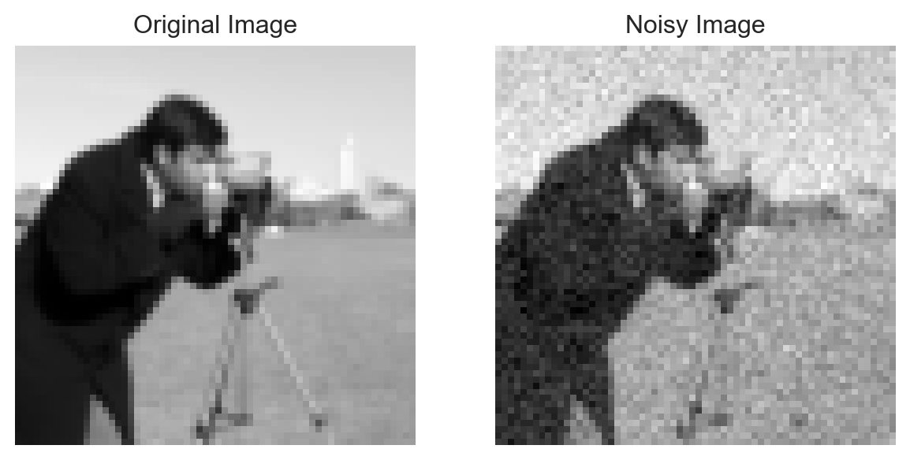
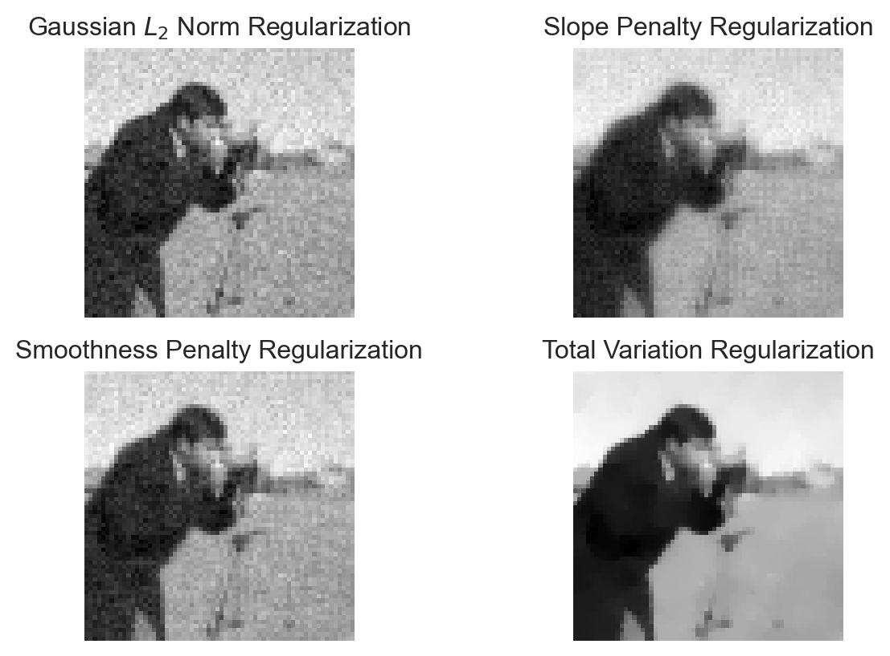

Lecture 8: Regularization and Priors in Inverse Problems
The role of regularization and priors in solving inverse problems.
Probability
Bayesian Inference
Inverse problems often have multiple or infinite solutions. Regularization and priors can be used to constrain the solution space and find a unique solution. This lecture covers the role of regularization and priors in solving inverse problems.
$$
$$
Motivation
Revisiting the structure of some inverse problems we have seen so far we generalize the problem as follows. We have some model: \[u(x) \rightarrow \text{model}\]
and also a forward process that may not be perfect or have some noise in it that produces the observed data:
\[ A(u(x)) + \epsilon = b \rightarrow \text{data}\]
where the goal is to recover the model \(u(x)\) from the data \(b\) with a known forward operator \(A\) and some noise \(\epsilon\). The problem is that the solution is usually not unique and may have an infinite number of solutions or no solution. We usually will specify the goodness of a solution by some metric, for example, the least squares error:
\[\|A\hat u - b\|^2 < \text{tol}\]
will specify that solutions within a certain tolerance of the data are acceptable.
Since the real world generally is measured via sampling, the \(u(x_i)\) are a sample space that estimate the continuous function \(u(x)\). Usually there are a huge number of \(x_i\) for which we want to estimate \(u(x)\), such that there are far more unknowns in \(u\) than there are data points in \(b\). This gives the least square problem an infinite number of solutions.
Simple Regularization
Regularization is a technique used to constrain the solution space of the inverse problem. It may incorporate some prior knowledge of the problem either explicitly or implicitly. The addition of a second term or objective to the least squares problem improves the metric by which the solution is being evaluated to distinguish between the infinite number of solutions. The general form of the regularized least squares problem is:
\[\min_u \|A u - b\|^2 + \alpha R(u)\]
An example of this could be using the \(L_2\) norm of the solution as the regularization term:
\[R(u) = \frac{1}{2}\|u\|^2\]
The new metric favours solutions where \(u\) is small, but it actually includes an even more explicit probabilistic interpretation which can be derived from the Bayesian perspective.
Bayesian Inference
Let the set of model parameters be \(u\) and the data be \(b\). Then we assume without any prior knowledge of the problem that the data is generated by a model with some noise:
\[b = A(u) + \epsilon\]
where \(\epsilon\) is a Gaussian noise term with mean zero and variance \(\sigma^2\). The likelihood of the data given the model is then:
\[p(b|u) \propto \exp\left(-\frac{\|A(u) - b\|^2}{2\sigma^2}\right)\]
Similarly, we can assume a prior distribution on the model parameters \(u\):
\[p(u) \propto \exp\left(-\frac{\|u\|^2}{2\beta}\right)\]
where \(\beta\) is the amount of standard deviation that we assume to be present in the prior.
Maximum Likelyhood Estimation
In maximum likelihood estimation (MLE), the objective is to find the model that gives the highest likehood for seeing the data that was observed. Note that the function \(\log (.)\) is a monotonic function so it preserves the ordering of values, so maximizing the likelihood is equivalent to maximizing the log likelihood. The MLE is then:
\[ \begin{align*} \hat u &= \arg\max_u p(b|u)\\ &= \arg\max_u \log p(b|u) \\ &= \arg\min_u \frac{\|A(u) - b\|^2}{2\sigma^2} \\ &= \arg\min_u \|A(u) - b\|^2. \end{align*} \] Giving the unregularized least squares problem.
Maximum A Posteriori Estimation
In maximum a posteriori estimation (MAP), the objective is to find the model that gives the highest likelihood for seeing the data that was observed given the prior information. The reason is that it is unintuitive to ask to fit parameters to maximize likelihood of data measured. The driver of the model should be the data itself which is independent of the model. This reverses the probabilistic objective– find the model parameters that are most likely given the observed data. Bayes’ theorem states that:
\[p(u|b) = \frac{p(b|u)p(u)}{p(b)}\]
where \(p(b)\) is the marginal likelihood of the data. The value of \(p(b)\) is a constant that does not depend on the model parameters, so we can ignore it when it comes to maximizing the probability.
\[\underbrace{p(u|b)}_{\text{posterior}} \propto \underbrace{p(b|u)}_{\text{likelihood}} \underbrace{p(u)}_{\text{prior}}\]
As in the MLE, the log likelihood is maximized to find the MAP:
\[ \begin{align*} \hat u &= \arg\max_u p(u|b)\\ &= \arg\max_u \log \Big( p(b|u) p(u) \Big)\\ &= \arg\max_u \log p(b|u) + \log p(u) \\ &= \arg\max_u -\frac{\|A(u) - b\|^2}{2\sigma^2} - \frac{\|u\|^2}{2\beta} \\ &= \arg\min_u \frac{\|A(u) - b\|^2}{2\sigma^2} + \frac{\|u\|^2}{2\beta} \\ &= \arg\min_u \frac{1}{2}\|A(u) - b\|^2 + \frac{1}{2}\alpha \|u\|^2 \end{align*} \]
where \(\alpha = \frac{\sigma^2}{\beta}\) is the regularization parameter. This gives the regularized least squares problem.
The choice of the regularization parameter \(\alpha\) is a statistical statement on the expected ratio of noise to prior information. If \(\alpha\) is large, the prior information is trusted more than the data, and if \(\alpha\) is small, the data is trusted more than the prior information.
Notes on Interpretation
In the Bayesian perspective, the regularization term is grounded in a probabilistic approach that will blindly pick the solution that is most likely given the data and the prior information. The maximum may not always be the best choice when considering the robustness of the solution to noise. The initial choice to regularize with the \(L_2\) norm \(\|u\|^2\) does not make any claims on the likelihood of the model parameters while still yielding the same results.
Probabilistic approaches to inverse problems with complex distributions are becoming more reliable now with the advent of generative models that learn an underlying probability distribution. While the Gaussian prior is easier to work with, it is simplistic and may not always be the best choice. For example the underlying parameters of a forward model could be the density of a material, or its conductivity, in which case the prior distribution could be something very different from a Gaussian. The choice of prior can be enhanced using a neural network for examples.
Choice of Regularizer
The problem of least squares with a regularization term can be generalized as:
\[\min_u \frac{1}{2}\|A u - b\|^2 + \alpha R(u)\]
For the case of the \(L_2\) norm, the problem becomes:
\[ \begin{align*} \hat u =& \min_u \frac{1}{2}\|A u - b\|^2 + \frac{\alpha}{2}\|u\|^2\\ =& A^T(Au - b) + \alpha u = 0\\ =& (A^TA + \alpha I)u = A^Tb \end{align*} \]
There are many other choices for the regularization term though.
Some common choices for the regularization term \(R(u)\) include:
Gaussian \(L_2\) Norm Regularization:
\[ R(u) = \frac{1}{2}\|u\|^2 = \frac{1}{2}\sum_i u_i^2 \]
Assumes a Gaussian prior on the model parameters \(u\), favoring solutions with smaller norms. It penalizes large values in \(u\), leading to solutions with smaller magnitudes.
Slope Penalty:
\[ R(u) = \int_{\mathcal{X}} \frac{1}{2}\|\nabla_x u\|^2 \, dx = \int_{\mathcal{X}} \frac{1}{2}\Big( \frac{\partial u}{\partial x_1}^2 + \frac{\partial u}{\partial x_2}^2 \Big) \, dx \]
Recalling that \(u\) is a function across a domain \(\mathcal{X}\), the slope penalty penalizes the squared magnitude of the gradient of \(u\). It encourages flatness in the solution by penalizing rapid changes in \(u\).
Smoothness Penalty:
\[ R(u) = \int_{\mathcal{X}} \frac{1}{2}\|\nabla^2 u\|^2 \, dx = \int_{\mathcal{X}} \frac{1}{2}\Big( \frac{\partial^2 u}{\partial x_1^2} + \frac{\partial^2 u}{\partial x_2^2} \Big) \, dx \]
The smoothness penalty promotes smoothness in the solution by penalizing changes in the slope of \(u\) across the domain.
\(L_1\) Norm Regularization:
\[ R(u) = \|u\|_1 = \sum_i |u_i| \]
The \(L_1\) norm promotes sparsity in the solution by penalizing the absolute values of \(u\). This leads to many parameters being exactly zero, which is desirable in feature selection and compressed sensing applications.
Total Variation Regularization:
\[ R(u) = \text{TV}(u) = \int |\nabla u| \, dx = \int \sqrt{\left| \frac{\partial u}{\partial x_1} \right|^2 + \left| \frac{\partial u}{\partial x_2} \right|^2} \, dx \]
Total Variation (TV) regularization penalizes the total amount of variation in ( u ) without squaring the gradient. It preserves sharp edges while removing noise.
A demonstration of the effects of the regularizer are given below for a case of denoising an image. Note that the operator \(A\) is the identity matrix in this case which is a simplification of the problem.
Show the code
import numpy as np
import matplotlib.pyplot as plt
from scipy.ndimage import gaussian_filter
from scipy.optimize import minimize
from skimage import data
from skimage.transform import resize
from skimage.restoration import denoise_tv_chambolle
# Load the sample grayscale image and normalize
Z_true = data.camera().astype(np.float64) / 255.0
Z_true = Z_true*2 - 1 # Normalize to [-1, 1]
# Downsample the image to 32x32
Z_true= resize(Z_true, (64,64), anti_aliasing=True)
# Add Gaussian noise to simulate observed data
np.random.seed(0) # For reproducibility
noise = 0.1 * np.random.normal(size=Z_true.shape)
Z_noisy = Z_true + noise
# Define different regularization penalties
def gaussian_l2_norm(u):
return 0.5 * np.sum(u**2)
def slope_penalty(u):
grad_x, grad_y = np.gradient(u)
return 0.5 * np.sum(grad_x**2 + grad_y**2)
def smoothness_penalty(u):
laplace_u = np.gradient(np.gradient(u, axis=0), axis=1)
return 0.5 * np.sum(laplace_u**2)
def l1_norm(u):
return np.sum(np.abs(u))
# Prepare observed data vector
A = np.eye(Z_true.size) # Identity for simplicity
b = Z_noisy.flatten()
# Regularization strength
alpha = 1
# Function to solve the regularized least squares problem
def regularized_least_squares(A, b, reg_func, alpha):
def objective(u):
# Least squares term
residual = A @ u - b
ls_term = 0.5 * np.sum(residual**2)
# Regularization term
reg_term = alpha * reg_func(u.reshape(Z_true.shape))
return ls_term + reg_term
# Initial guess (flattened noisy image)
u0 = b.copy()
result = minimize(objective, u0, method='L-BFGS-B')
return result.x.reshape(Z_true.shape)
# Apply different regularizations
recovered_gaussian_l2 = regularized_least_squares(A, b, gaussian_l2_norm, alpha)
recovered_slope = regularized_least_squares(A, b, slope_penalty, alpha)
recovered_smoothness = regularized_least_squares(A, b, smoothness_penalty, alpha)
recovered_l1 = regularized_least_squares(A, b, l1_norm, alpha)
recovered_tv = denoise_tv_chambolle(Z_noisy, weight=alpha*.1)
# Plot original, noisy, and recovered images for each regularizer
fig, axs = plt.subplots(1, 2)
#Original
plt.subplot(1,2,1)
plt.imshow(Z_true, cmap="gray")
plt.title("Original Image")
plt.axis("off")
# Noisy Image
plt.subplot(1,2,2)
plt.imshow(Z_noisy, cmap="gray")
plt.title("Noisy Image")
plt.axis("off")
plt.show()
# Plot original, noisy, and recovered images for each regularizer
fig, axs = plt.subplots(2,2)
# Gaussian L2 Norm Regularization
plt.subplot(2, 2, 1)
plt.imshow(recovered_gaussian_l2, cmap="gray")
plt.title("Gaussian $L_2$ Norm Regularization")
plt.axis("off")
# Slope Penalty Regularization
plt.subplot(2, 2, 2)
plt.imshow(recovered_slope, cmap="gray")
plt.title("Slope Penalty Regularization")
plt.axis("off")
# Smoothness Penalty Regularization
plt.subplot(2, 2, 3)
plt.imshow(recovered_smoothness, cmap="gray")
plt.title("Smoothness Penalty Regularization")
plt.axis("off")
# Total Variation Regularization
plt.subplot(2, 2, 4)
plt.imshow(recovered_tv, cmap="gray")
plt.title("Total Variation Regularization")
plt.axis("off")
# Save recontructions
plt.savefig("imgs/regularization_effects.png")
plt.show()


Closing Notes
Another note to be made is that the regularization space itself can be changed by working in a latent space where \(u = Dz\) and \(D\) is a dictionary or basis that maps the latent space \(z\) to the model space \(u\). This is somewhat similar to PCA.
\[\frac{1}{2} \|A(Dz) - b\|^2 + \alpha R(z)\]
A more modern approach chooses \(R(u)\) based on data about the problem itself. For example, given a set of data \(\{u_1, u_2, \ldots, u_n\}\), find the distribution \(\pi(u)\) or what \(R(u)\) should be. This statistically learned regularization approach leads to neural networks and deep learning, a topic that will be explored further in the next lecture.